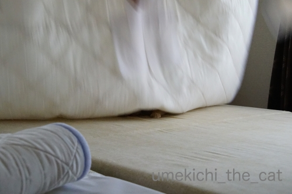
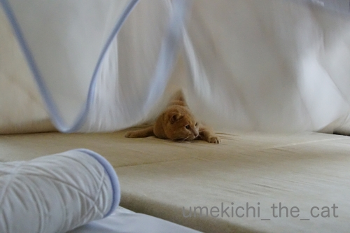
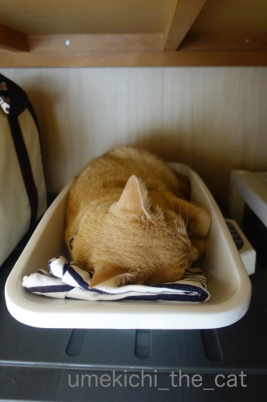

波潜りなアイツ [梅吉]

この波の向こうからアイツがやってくる。

チラ見え！

来ました！華麗にシーツの波下を潜ってます。

お目目をしぱしぱしながら果敢に攻めてきますよ。

波が大きければ大きいほど楽しいようです。
おかーさんにはこれのどこが楽しいのさっぱりわかりませんけど＞＜
新聞の下も大好き。
潜り込んでくるので新聞紙をかぶせるとその下でひたすらじーっとしています。
時々新聞をガサガサっとすると興奮するらしくお目目が爛々に(*>艸<)
暑いのに窓辺で寝ている、エアコンの効いてない部屋で寝ている・・・
エアコン直下は少数派・・・？
皆様のブログで見聞きした夏の猫様のご様子ですが梅吉は今、押入れが一番のお気に入り。

冬用のブランケットをまとめてある上や
（押入れはエアコンから離れているので中はとても暑いです）

おなじく押入れの中の体重計のトレーにすっぽり。
この体重計は梅吉の体重を計るために買った赤ちゃん用のものですw
ウエスにしようと置いておいた私の古いＴシャツが枕になってる(⌒-⌒;
うっかり置いておけませんねぇ・・・・

和室のチェストの上でも寝ています。

物があっても全然気にせず寝ちゃうので色々なものは脇に押しやられ・・・
猫様スペースがどんどんと広くなっていく。
でも物を片付けると寝なくなるんだろうなぁとこのままにしています(*>艸<)
ーーーーーーーーーーーーーーーーーーーーーーーーーーーーーーーーーーーーーーーー
梅吉の膀胱炎の薬を止めてからほぼ一週間。
おしっこは1日3度、量は水分を多めに取らせているので以前より多め。
頻尿は一度もなく順調です。
すっかり完治したようでホッとしております。
ご報告までm(_ _)m
我が家の最寄駅の建屋に花屋さんが入っています。
夕方になると在庫処分的に投げ売り価格になるので仕事帰りのおっとが色々買ってくるのですが・・・
そのひとつ「ガガブタ」
多年草の水草です。葉っぱは睡蓮によく似ている。
今年一つも花をつけなかった睡蓮の水盤に入れておいたらこんな面白い花が咲きました。
花びらの先にもわもわした毛のようなものが生えてます。
こんなの初めて見ました！
まだまだ知らない植物がたくさんありますね＾＾

カフェオレ色の梅吉

梅吉 2023年8月10日 永眠


梅吉と出会った譲渡会

犬猫の理由なき殺処分ゼロ
妄想広告
UMEKICHI 光

爆発的に早い！
時々攻撃的！
Thanks to Mr.Boss365
爆発的に早い！
時々攻撃的！
Thanks to Mr.Boss365

波乗りジョニーではなく波乗り梅吉くんですね(^^♪
見ているだけで癒されそう～
膀胱炎が悪化しなくて良かった良かった☆
by yamatonosuke (2019-08-08 01:05)
梅吉さん全快おめでとう。
多少迷惑な遊びにもちゃんとお付き合いしてくれるちぃさん優しいです。
でもあんまり暑いところで寝てると熱中症とか心配になりますよね~。
by zombiekong (2019-08-08 01:23)
こんにちは。
梅吉くんもサーファーデビューですね。理解するには・・・
おかーさんもサーフィンに挑戦！！おとーさんも誘いサーフィンデビューです。
ニャンズの行動、理解出来ない事が多々ありますが・・・
小生の推測では「風がない場所・暗い場所」は落ち着くみたいです。
膀胱炎の完治！！良かったですね。原因？ストレス等もあるので気を付けたいですね。
「ガガブタ」猫が好きそうな花びらです。梅吉くんの反応が楽しみです！？(=^･ｪ･^=)
PS.北海道の定番？ジャガイモとワカメのお味噌汁に今度挑戦してみます。
by Boss365 (2019-08-08 01:27)
楽しそうな遊び♪
何がそんなに梅吉さんを
燃えさせるのか（笑
膀胱炎の症状も治まり良かったです(#^.^#)
このまま何事もありませんように♪
by きぃ (2019-08-08 06:08)
我が家も「なんで？」って場所で寝てますよ。
以前は天井裏へ自由に上がれるようにしてたのですが
真夏のクソ暑い日に次男君が上がって出て来ないので
救出に入った事があります＾＾；
by ぽちの輔 (2019-08-08 06:47)
梅吉さん、華麗に潜ってますねぇ( ^ω^ )
うちもかみさんがシーツや掛け布団を
パサーってすると大喜びで順番に潜るので
かみさんは「止めどころが〜、腕が〜(＞人＜;)」と泣いてます(⌒-⌒; )
そうそう、エアコンつけててもエアコン効かない場所で
寝てることありますよねぇ(*_*)
それでもエアコンをつけずに会社にいくことは出来ませんが(ｰ ｰ;)
by ニッキー (2019-08-08 07:02)
梅吉さん、体調が戻って良かったですね(^^)
猫さんは思いもしない行動をとるので楽しいですよね。波模様の下から徐々に顔を出す梅吉さん、期待を裏切りませんね。
ちなみにしょうちゃんは、車のタイヤの上で寝ていることが多くなって気が抜けません(^_^;)
by kou (2019-08-08 07:39)
波乗り梅吉さん、かっこいい～♪
一生懸命シーツをバサ～ッバサ～ッと振るちぃさん、お疲れさまです(^▽^;)
ほんと、どこでも潜りたがりますよね。
ウチのは半透明のゴミ袋が特に好きらしくかぶせるとジッと潜んで、手を近づけると強烈な猫パンチが飛んできます^^
梅吉さんも常温派ですか・・熱中症を心配する下僕の心知らず・・^^;
床にでろ～んと伸びたりしますけれど、案外暑さには強いのかもしれあせん。
リビングのエアコンのみつけっぱなしで、あとは自由に行き来できるよういしています。
by ゆきち (2019-08-08 12:47)
梅吉さん、完治して一安心ですね！
昨夜はエアコンの無いホテルで避暑してきました(^^)
by ma2ma2 (2019-08-08 16:10)
波乗りと言っても本物じゃないから陸サーファー(オカサーファー)か？
どこでもねこ状態だニャ（ﾟ□ﾟ）
by 英ちゃん (2019-08-08 17:06)
ビッグウェーブの向こうに見えるのは！サーファー梅吉さんですね
ウェーブ作る係のお母さんもいい運動ということでウィンーウィンの関係？が
成立してるのでしょうか(^^
猫様はエアコンが効いたお部屋はあまり好みではないのでしょうか。
うちのちゃんはエアコンが効いてくると布団に来ます。人間とは体感温度が
ちがうのか？なので、外出する時も容赦なくエアコンのスイッチはOFFします。
おとーさんが買ってくるお花、はかなげで涼しげです。
by marimo (2019-08-08 17:28)
膀胱炎の完治良かったですね。
波乗り梅吉さんのお相手をしているちぃさん、
大きい波や小さい波を作っているのですから、
若くてエネルギッシュだと思いました。
ウエス要員のTシャツを枕にしてトレーの中で寝ている梅吉さん、赤ちゃんみたいですね。
熱中症には気をつけてください。
おとーさん、花屋さんの投げ売りの良い時間に
帰宅されるのですね。
ガガブタ、15mmの可愛い花のようですね。
時間といい、花屋さんといい良い地域ですね（笑）
カレーのトッピング、チーズ好きです。
by kiki (2019-08-08 17:54)
波潜り梅さん、サーフィンしているようですね。
梅吉さんも暑いところ平気なのですね。ウチのもそうです。
でもエアコンの冷気の下にいることもあって、行動がよくわかりません。^^;
ガガブタの花、初めて見ました！
by yes_hama (2019-08-08 21:44)
実家のミイちゃんも同じですー。あんまりエアコン好きじゃないみたい。
まぁ、昔は、「犬は1年で3日しか寒い日がなく、猫は1年に3日しか暑い日がない」と言われていたそうですから、暑さには強いのかなぁ。
とはいえ、最近の暑さは尋常じゃないですからね！
熱中症にならないようにしてくださいねー、梅吉さん！
あ、膀胱炎、完治おめでとうございます。
by ChatBleu (2019-08-08 22:02)
ユキもチビも玄関のタイルの上が好きです。
by riverwalk (2019-08-08 22:48)
波乗り梅吉さん！
なんて楽しそうなんでしょ♪
シーツも新聞紙も好きですよねえ。のりのりな梅吉さんの似合うこと＾＾
膀胱炎完治してよかったです！＾＾
by sana (2019-08-09 00:43)
うーん、エアコンがんがんかけてる私には
この気持ちがわからないー(^_^;)
膀胱炎、完治おめでとうございます！！
by よーちゃん (2019-08-09 08:32)
確かにエアコン直下は少数派ですね。
うちはその少数派だけど(笑)
大きい波だと盛り上がっちゃうのね！
梅吉くん楽しそうだよーー
猫様スペースが広がるの分かります。そして片付けると寝なくなるっていうのも分かるｗｗ
微妙にコチャっとしてるほうが良いんでしょうね^^
某公園・・・違うよ！膀胱炎！すっかり治って一安心です♪
by リュカ (2019-08-09 10:38)
ふふ サーフィン楽しそうですね～♪
うちもシーツやベッドカバーの付け替えをしていると
もれなくやってきます。そしてサーフィンｗｗ
同じですねー(*´ゝ艸･`)ﾌﾟﾌﾟ
そして、アツアツの窓辺で寝ます！！
あまりエアコンは好きじゃないみたいですね＾＾
膀胱炎、完治ですね！おめでとうございます❤
うちのウ●●●ス問題も解決です(￣∀￣*)ｲﾋｯ
by カトリーヌ (2019-08-09 15:51)
梅吉さん、暑いのが好きなのかな？？？
by ニコニコファイト (2019-08-10 06:35)
波乗り、ならぬ、波潜り(^.^) 楽しそうですにゃあ♡
しかし･･･いいあんばいのビッグウェーヴ･･･人工（文字通り、人の努力）ですよね(^_^;
膀胱炎、長引かず治ってよかったですね♪
by のらん (2019-08-10 10:53)
ガガブタの花、かわいい。面白いですね。
梅吉さん完治良かったです。
by ふにゃいの (2019-08-10 22:52)